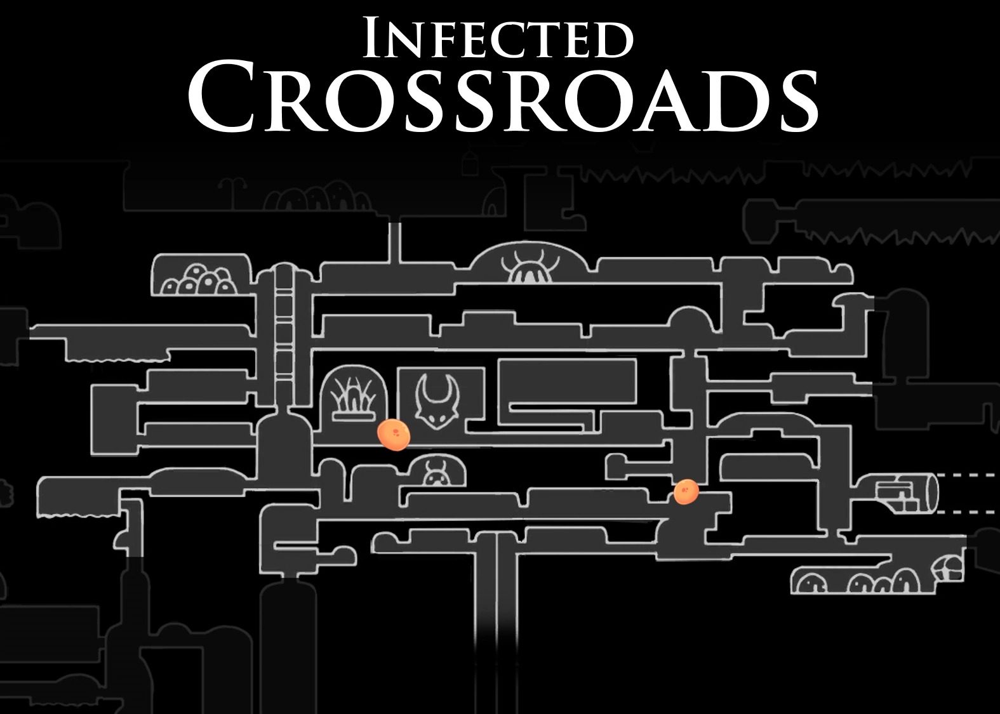

The Hollow Knight map is obviously an iconic part of the game and most players know about the many landmarks and sites throughout the map. Hollow Knight also has 14 Biomes or areas which range from The Forgotten Crossroads, to The Ancient Basin, and The City of Tears
This Hollow Knight map is an official art work made by Team Cherry which is missing some parts of the map like The Abyss. The image below will show the Hollow Knight how it is shown in game with all areas (With no markers).
In Hollow Knight several areas change as the player progresses through the game due to the spread of the infection or due to other factors not relevant. The most notable of these changes is the Forgotten Crossroads to the Infected crossroads. This change causes the Forgotten Crossroads to be overcome with infection, it also affects the enemies as they become overriden with infection and become deadlier and more hostile.


This happens when you kill a dreamer for the first time, Because the Hollow Knight is locked inside The Black Egg Temple killing one of the dreamers helping keep it sealed causes infection to spread out causing The Infected Crossroads.
To get Maps of Hallownest you must interact with the NPC Cornifer. He will let you purchase a map of whatever location you find him in for a certain amount of geo. You can identify Cornifer is near by his distinct hum.
Cornifer Hum

Some things that you'll need along the journey are a Map and Quill and the Wayward Compass. The Map and Quill is what updates your map to do this you must sit on a bench after roaming around a new area to see it in your map. The Wayward Compass is a Charm that you can equip to see where you are on the map, it shows up as a little icon of the Knight. You can purchase both of these with Geo at Iseldas shop in Dirtmouth whom is actually Cornifers wife! How cute.
The map of Hallownest is very diverse and there are many things to find and many places to explore truly a place to get lost in for hours on end and keeps the player on its feet completing task after task. Dont forget there are secret passages not shown on the map so Good Luck finding them!